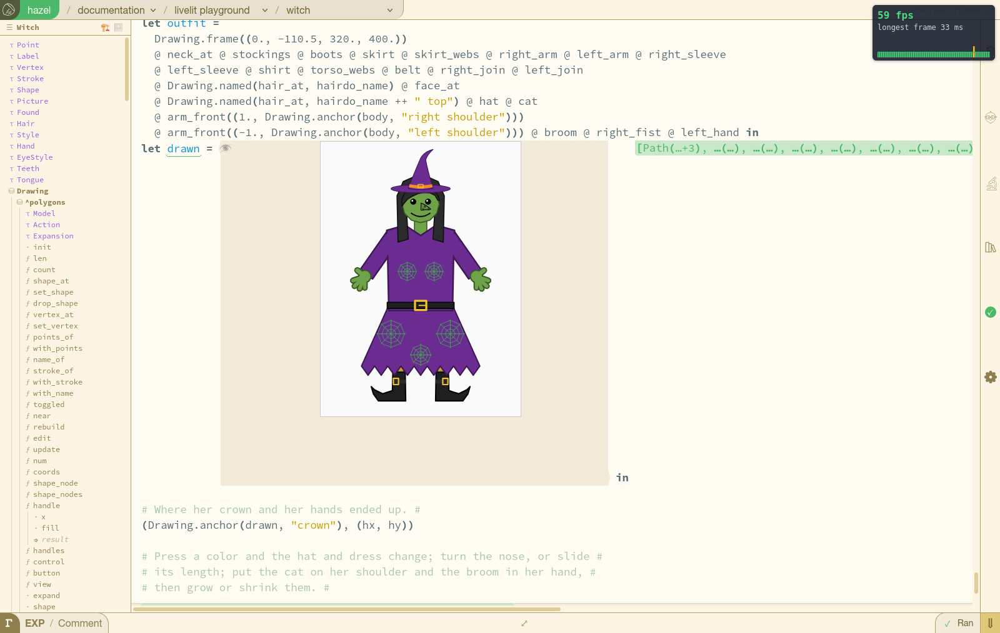

Hazel reports · report 051 · hazel-jit · 2026-11-09, revised 2026-11-10 05:46 MST · work in progress · for colleagues, and their agents
Hazel-JIT Status Report
hazel-jit compiles Hazel to JavaScript, and the browser runs it. What does it gain, and what does it cost? How can you use it in your own PR today? What has been added since its first version, three days ago? And what does it not do yet? Matthew, 2026-11-09: "a report for my colleagues to read (or have their agents read)". Everything here is on one branch, trial/694-view-jit (hazelgrove/hazel#2817), and every number names the build or the program it was measured on.
Try it in your browser. The Witch slide, compiled, with a frame-rate overlay at top right; and the same with nothing compiled. Drag a slider and watch the picture. Every slide of the Livelit Playground is linked the same way in hazelgrove/hazel#2819, which hosts this build (the branch at 61f3f01a15, build 8 of report 050).
Outline
- What hazel-jit is: a compiler from Hazel's elaborated terms to the source of a JavaScript function, with what carries values across and draws its answers: 2,975 lines of Reason in four modules.
- Expected gains: compiled code runs 13 to 1,140 times faster than the interpreter; in the app, on today's build, a slider's step shows in the picture 19 to 24 ms after the click (it was 4.17 to 6.52 s before hazel-jit ran the slide), and a drag runs at about 60 frames a second, 171 of its 173 frames within one.
- Expected costs: compiling a livelit's definition takes about a millisecond, the largest about 20 ms, and a whole slide's program 87 to 299 ms (median 153), once; loading the slides with many livelits is no slower.
- How to use it in your own PR: base your branch on
trial/694-view-jit, and livelits compile with no change; the API, the command line, the tests and the Firefox check, for anything else. - What has been added since the first version: 112 commits in three days, from a term compiled in a test to a slide's whole run compiled in the page.
- Limitations: JavaScript's numbers, no probes inside compiled code, the forms it does not compile, one browser, and not on
dev. - Next steps, ongoing now: the five changes under way today, in Matthew's order, and what each would take away; and how this was put together.
What hazel-jit is
hazel-jit turns an elaborated Hazel term, the same term the interpreter runs, into the source text of a JavaScript function; the browser's own engine makes it a function with new Function and runs it. It compiles once, and runs as often as it is called. Where it meets a form it does not compile, it says why, and that code runs on the interpreter instead: nothing is compiled wrongly to stay fast.
| Module | What it does | Lines |
|---|---|---|
src/language/dynamics/HazelJit.re | The compiler: a term to JS source (compile_full, try_compile), and its runtime, $R (structural equality, builtins, parameters and samples). | 895 |
src/language/dynamics/HazelJitValue.re | The boundary: Hazel values into JS (to_js) and back (of_js, read by the types the compiler recorded), a livelit definition compiled and its view and update called (view_of_def, call_view, call_update), and the counts and timings the Firefox check reads. | 812 |
src/language/dynamics/HazelJitRun.re | A slide's whole run, compiled, with each livelit's model a parameter (report 049). | 797 |
src/haz3lcore/projectors/HazelJitDOM.re | A view's answer drawn straight from its JS, without carrying it back into Hazel first. | 471 |
Values in JS: numbers are JS numbers; a list is cons cells, {h, t}, with null for the empty list; a tuple is an array, each label also a property; a constructor is {c: "Name", v: payload}; a function is a JS function of one argument; a module is a labelled value of its members. Types, ascriptions and parentheses are erased. Report 045 has the details (how it works).
Expected gains
The same Hazel code runs 13 to 1,140 times faster compiled than on Hazel's interpreter, on every program measured so far. The gain is largest for small pure computations (a recursive sum, 1,140 times), smaller where values cross into JS and back (a Polygons render, 40 times warm), and in between for a whole slide's run (the Witch, 106 to 119 times). In Firefox, in the app, on build 8: the Witch's picture view takes 1.5 ms compiled against 64 ms on the interpreter, and its polygon editors' views 0.12 to 0.25 ms against 17 to 35 ms.
globalThis.hazelJit.bench, medians of 15). A drawn view's time is as if updating the state were free. The ratio is of the middles of the ranges.In the app, the gains reach the user: on build 12, today's, a click on one of the Witch's sliders shows in the picture 19 to 24 ms later, and a drag runs at 57.6 frames a second, 171 of its 173 frames within one 60 fps frame. On the Witch slide (2,222 lines of Hazel, 53 livelits), a step took 4.17 to 6.52 s on build 1, with nothing compiled in the run, and 176 to 290 ms on build 8, report 050's last; a drag ran at 9.8 frames a second on build 5 and 48.4 on build 8. Build 12 draws a step from the compiled run's answers first and makes the edit of the program after the paint, and its drag frames reuse each editor's decorations, so the page's view is 6.1 ms a frame, against 10.1 on build 8. (The first of build 12's four steps took 124 ms; and one run's frames a second can differ from the next by a third, so the view's time per frame is the steadier measure.) Build 13 takes the sidebar's outline out of the page's view and builds it on its own after the paint (36 to 60 ms, two or three times a step), so the whole view after each of the worker's messages is 45 to 63 ms, against 88 to 130 ms on build 12, and a drag's view is 4.9 ms a frame. A step on build 13 shows in 24 ms twice, 51 ms on the first step of the arms slider (whose first view took 17 ms; no outline was built before its picture), and 72 ms the first time. Build 14 takes on the page's work after a step, as the check names it now (each projector drawn, with why, and each action): on machines of the same speed (the worker's encode 68 to 88 ms on both), that work, the autosave left out, is 0.37 to 0.52 s on build 14 against 0.56 to 0.92 s on build 13. The probe on the Witch's whole picture (^^probe(drawn)) drew its row in 44 to 91 ms after each worker answer, rewriting the whole 134 KB value before abbreviating it; on build 14, 8 to 21 ms. And the worker's reuse plan and first stream, which restated what the compiled run had drawn, no longer cost the page a calculate and a whole view: they wait for the result. (So the autosave, a second after the last action, now falls before the result rather than after it: 48 to 58 ms, the same work moved.) Build 15 keeps the livelits an edit does not touch: the view after a step's edit drew all 53 again, as the statics map was new, though 51 had their own statics record unchanged; keyed on that record, the livelits in that view take 2 to 3 ms, against 9 to 14 ms on build 14, and the page's work after steps 2 to 4 is 0.35 to 0.46 s (one run, a machine like build 14's). On a machine like build 13's, build 15 shows a step in 16 to 20 ms, and the page's work after steps 2 to 4 is 0.24 to 0.30 s, against 0.43 to 0.60 s on build 13; a drag runs at 58.6 frames a second, 173 of its 177 frames within one 60 fps frame, the page's view 4.4 ms a frame. (One run each.) The autosave is a cost to look at next: a second after each step's edit it takes 37 to 46 ms, 27 to 36 of them printing the whole program (2,222 lines) again for the slide's text; its first time after the slide loads it took 287 ms, and on one run of build 15 it came just as the first step did, which then showed in 443 ms. And it cost more than itself: it went through the update, whose wrappers made a new model, so each autosave was followed by a calculate (11 ms), a whole view (25 ms) and the outline built again (20 to 30 ms), though it changed nothing. Build 16 takes the autosave out of the update: the same model comes back, and nothing follows it. Build 17 takes on the comparison after the paint, which checks that the program is still the one the slide's run was compiled from, but for its livelits' models: it copied the whole program with the models left out and walked both copies, 33 to 43 ms a step, though after a step the new program is the old one's very objects but for 36 to 49 nodes. Remembered per node, the copy now touches only those, and the walk stops where the copies are the same objects: 1 ms, the run kept at every step as before. And build 18 makes the first step like the others: the compiled run compares each livelit's answer with the run before to draw again only those that changed, and before the first step there was no run before, so all 53 were drawn again (the first view 65 ms). A run right after the compilation, kept only for that comparison, takes its place: the first step's view 26 ms, its picture 92 ms, from 132. Build 19 takes on what the worker's answer costs the page, a second or two after the picture. Every answer is new objects, and two caches keyed on them by identity: the outline on the run's test results (a new record each time, tests or none), so it was built again after every answer (59 to 82 ms) and then the whole page redrawn to show it; and every livelit on the whole new dynamics map, so all 56 projectors were drawn again. The outline now keys the results by each test's status, and a livelit records what its drawing read of the run (its own samples, those it looked up, its pinned interval) and is kept while those are the same by value; its handlers act on the newest. After each answer 4 projectors are drawn (the edited livelit, one with splices, the two probes), the outline is the one before, and the page's work after a step is 0.31 to 0.40 s, against 0.34 to 0.55 s on build 18 (one run each, build 19's machine a little slower). Left of the outline: its build after the edit itself, 55 to 70 ms, though its entries are the same; keying it on its rows needs its handlers to act on the newest program, and blank bodies, refusals and the livelits' rows in the key. Build 20 takes on the answer itself, 590 KB a step: weighed by part, 112 KB of it was the last item's final stream, the cache's entries finished since the last stream (216 states, each with every probe so far), which the page decoded and merged only to drop, as a result sets the streamed outbox aside; the rest was the result's own probes, 108 samples, among them the picture (about 140 KB as a term) reached from several. The result goes without that stream (475 KB), and its first-order sample values go as data, as ^report(47) measured them (17 values a result, none different when made terms again on the page): the answer is 198 KB, the worker's encode 21 to 29 ms (against 72 to 107 ms) with 29 to 41 ms making the data, a check of each value's way back included, and the page's decode 7 to 8 ms (against 24 to 31 ms) with 6 to 17 ms making the values terms again. The page's work after a step is 0.21 to 0.32 s. Next for the values: make them data where samples are made, in the worker, and keep them data on the page, which would take away both conversions (^ticket(718), waiting on ^report(47)'s questions). Build 21 only times the parts of three costs. Making the data is FirstOrder.of_term, 16 to 50 ms in the worker, and the check of each value's way back, 13 to 64 ms, which runs only while the check records; making terms on the page is to_term, 5 to 10 ms. The outline drawn again after the edit, 42 to 53 ms, is mostly finding which of its rows open no cell, 32 to 40 ms (the rows themselves about 8). The autosave, 38 to 67 ms, is mostly printing the whole program for the slide's text, 25 to 48 ms, though a step changes one item. Build 22 takes on the outline's: for each of the 53 livelits, finding the rows that open no cell searched from the program's root for the livelit's path, which it reads only for a row inside one, and there are none; made lazy, the answers are the same and it takes 25 to 29 ms. Build 23 takes on the autosave's: the program's text is its top-level pieces' texts joined, so each piece's text is kept by the piece's identity and only the item a step changed is printed again (the whole program when a probe wraps a top-level piece or the probes changed; a test checks the text is the whole print's). Printing takes 3 to 6 ms, and the autosave 21 to 31 ms. Build 24 goes back to the outline: the walk asked whether each tile was a row, twice, a lookup in a map of ids, before its cheap tests; asked last, it asks 6,753 times of 43,171 pieces walked, and takes 11 to 14 ms, so the outline drawn after an edit is 29 to 32 ms, from 42 to 53 on build 21. (One run each, on GitHub's machines, which differ: build 23's ran slower throughout, its drag's view 8.0 ms a frame against 6.4 on builds 21 and 22 and 6.9 on build 24.)
Builds 25 and 26 take on the page's work when the worker's answer arrives, 92 to 116 ms on build 24. Build 25 only times the cell's work out of its syntax, which runs twice there, before and after the cell takes the answer's samples: it is all the syntax cache, 9 to 26 ms the first time, when the samples are not yet new, and 9 to 16 the second. Build 26 takes on the picture's probe row, 15 to 35 ms: to grey out a sample that is not a value, it ran the evaluator's step rules over the whole picture. Plain data (literals, labels, constructors, and lists, tuples and constructor applications of them) is a value exactly when its parts are, so its shape answers now, and the step rules only anything else (its test first compiled on build 30, where it passes). The row is 3 to 6 ms, and the page's view at the answer 31 to 64 ms, from 50 to 75 on build 24. Its new mark shows the next cost there: at each answer the views of all 53 livelits are made again, 16 to 41 ms, though only 2 are drawn.
At the worker's answer, builds 27 to 33 cut the page's redraw down to what changed: the projectors' views there take 11 to 16 ms, from 16 to 41 on build 26, and the whole view about 30 to 35 ms, from 36 to 60 on build 31. Build 27 names why each calculate's syntax cache worked the projectors' shapes out again: at the answer, the first time because the probes' list was a new object, though no probe had changed. Build 28 counts the livelits' views made again there, 16 to 22 ms: the view cache comparing 104 sample values by value, 2 to 8 ms, and wrapping the views it gave back, 10 to 12. Build 29 keeps the probes' list when a calculate removes no probe, which is nearly always: at the answer the first syntax pass takes 0 ms (8 to 19 on build 27), and the cell's calculate 10 to 15 ms (15 to 43 on build 26). Build 30 keeps a livelit's finished views when its view comes back from the cache the very same, for the same place, status and shape: 51 of the 53 keep them at each answer, and the same shapes keep the splice map. Build 31 keeps a livelit's shape by its definition and its model's value, not by the sample's number, which each run of the worker counts afresh, and a projector list equal to the one an editor last drew with stands for it: the 51 keep their views in the redraw after the edit too, and no shape function is evaluated at all. Build 33 keeps the sidebar's problem list at an answer, 2 to 3 ms (3 to 29 on build 31). Left at the answer, from build 35: the projectors' views 8 to 15 ms, the probes' views 7 to 9, the projector data 4 to 5, the sidebar 3 to 4; and once a step 20 to 35 ms somewhere else each time (the syntax pass, one livelit drawn, the decorations), most likely the browser collecting the answer's garbage, which the page cannot time.
A drag got slower twice on the way, and is now faster than on build 30: 6.3 ms a frame on build 38, against 8.2. Build 31's shape check, keyed on a livelit's definition, made a drag 15.1 ms a frame (its projectors' views 12.0, from 3.9): a use with arguments, like ^slider(..), had its livelit applied to them anew at each lookup, so the check found an equal copy each time and compared it node by node. Build 32 keeps a use's applied livelit while its livelit, type and arguments are the same; its drag was 5.4 ms a frame, but that drag did less than the others (with the compiled run off it was as fast, 5.5, where builds 30 and 34 take 15.3 and 15.0, and it compared no model value), so 5.4 is not a mark to hold the others to. Its memo held 16 uses of a livelit and emptied itself when full, and the Witch uses ^slider 29 times and ^choice 18, so build 33 holds 64. Build 33's drag was 16.1 ms a frame: the shape cache compared a livelit's model value at every frame, 8 to 13 ms for one of them (why build 32's drag compared none is not known). Only a shape that is a function of the model reads it, and none on the Witch is, so build 34 keeps a shape that does not read its model by its definition alone: 7.0 ms a frame, and at the answer the cell's calculate 7 to 8 ms (its shapes 17 to 50 on build 33).
After an edit, builds 36 to 38 bring the page's work after the picture to 167 to 183 ms at steps 2 to 4, from 206 to 215 on build 35 and 236 to 300 on builds 25 to 34; the edit's own work after the paint is now the larger part of it. Build 36: the outline, drawn again after each edit with its entries the same, walked all 43,171 pieces to find which rows open no cell, 10 to 11 ms; kept per top-level tile while the rows wanted are the same, that walk takes 0 to 2 ms, and the outline 18 ms (25 to 27). Build 37 keys a probe's view on its own statics record, as a livelit's is, since a probe reads neither another id's statics nor its elaborated term: after an edit no probe is drawn again, and the view takes 31 to 43 ms (37 to 62). Build 38: a view cache hit whose reads are equal by value takes the new map, so after an edit the livelits' 100 to 102 sample values are not compared again (2 to 5 ms). Its first run landed on a slower machine (the worker's encode 32 to 36 ms against 25 to 31, the slide's run 260 ms against 176) and read slower throughout; its second, on a machine like build 37's, is the one plotted. Left after an edit: the update that makes it, 16 ms; the statics, 16 to 20; the syntax cache, 11 to 12, which are the editor's core; the view, 31 to 43; and the outline, 18, on its own.
(A correction: builds 26 to 29's tests did not compile. The Witch check builds only the app, so it passed; CI's checks failed, and build 30 fixed the tests, which pass. Build 32's full tests ran past CI's 100 minutes; build 34's, with the same code and more, passed in 57. Builds 35 to 38 were tried on a branch of their own, trial/694-view-jit-35, so that a push would not cancel build 34's CI.)
trial/694-view-jit (the table below), each one run of the Firefox check on GitHub's machines. Left: each of the four steps of the neck and arms sliders, from the click to the picture changing; from build 12 the page draws the compiled run's answers first and makes the edit after the paint, and from build 13 the sidebar's outline is built after the paint, not in the view. Build 14's run was on a slower machine (the worker's encode 70 to 82 ms, against 52 on build 13's), so its drag's view (7.5 ms a frame) is to be read against build 13 on a machine like it: 7.7. Build 15's run plotted was on a machine like build 13's, and builds 16 to 20 on ones like build 14's. Right: a 3-second compiled drag of the neck slider, the page's view per frame (dark: the editors; light: the rest), with the drag's frames a second. The frames a second vary from run to run more than the builds differ (builds 9 to 11 changed nothing a drag does and gave 54.3, 47.8 and 56.3); the view's time per frame is steadier.
?hud) at top right: 59 frames in the last second, the longest 33 ms.Report 050 has builds 1 to 8, each measured the same way:
trial/694-view-jit, each the one before plus one change; Firefox on GitHub's machines): each dot one step, from the click to the picture changing. Builds 1 to 3 waited for the worker's answer; from build 4 on, the page's compiled run draws the picture first.What to expect for your own code:
- Tight computation in Hazel (recursion, arithmetic, lists, matching): hundreds of times faster. The Petri net rule of report 043, 654 times.
- A view called on a model and drawn: tens to a few hundred times, since the model goes into JS and the answer is drawn from JS. Warm, a Polygons render is 40 times faster with its trip; its first 30 calls after compiling, 13 times (Node warming up).
- A whole program's run: about a hundred times (the Witch, 106 to 119 in Node).
- Against JavaScript compilers: hazel-jit's code is 1.8 times as slow as JS written by hand on the Petri rule, and 2.9 times ReScript's; report 046 says why, and what to change (next steps).
- What does not get faster: whatever is not Hazel code running. On build 12 a drag's frame is 6.1 ms of the page's own view against about 1 ms of the compiled run, so drawing the page, not running Hazel, is most of a frame (report 050, where the time goes now).
Expected costs
Compiling is paid once per definition or program, and is small beside what it saves: about a millisecond, the largest about 20 ms for a livelit's definition, and 87 to 299 ms (median 153) for a slide's whole program, in Firefox. Loading the slides with many livelits is no slower with Compiled views on than off, and on two of them faster; on Polygons, with one livelit, a load took 0.3 s (build 8) and 1.8 s (today) longer, in single runs. On 3e51af567f (run 42654708022) the page compiled 130 livelit definitions on the six polygon slides: most, of about 300 nodes, in a millisecond or less (Firefox's clock reads whole milliseconds here), and the largest, a module of 62,077 nodes, in 14 to 21 ms; all of a slide's definitions together, 19 to 50 ms. A slide's whole run, 24,000 to 112,000 nodes, took 87 to 299 ms (median 153), nearly all of it hazel-jit writing the JS (the browser's new Function took 0 to 14 ms): about 1.3 to 2.8 ms per 1,000 nodes.
globalThis.hazelJit.compiles). Its time is hazel-jit's part, the term to JS source, and the browser's, new Function and, for a definition, running its module; its size is the elaborated term's nodes (expressions, patterns and types). Firefox's clock reads whole milliseconds here: the dashed row is the compilations that read 0 ms, under one.| What was compiled | How many | Median | Range | Median parts: to JS + in the browser | Median size, nodes | Per 1,000 nodes |
|---|---|---|---|---|---|---|
| a livelit's definition | 130 | 1.0 ms | 0.0 to 21.0 ms | 0.0 + 0.0 ms | 294 | 0.33 ms |
| a slide's whole run | 10 | 153.0 ms | 87.0 to 299.0 ms | 147.0 + 6.5 ms | 97,896 | 1.88 ms |
3e51af567f, today's build (3e51af567f, run 42654708022), in Firefox, every compilation the page made on the six polygon slides. Report 045 measured the Polygons definition at 4.46 ms in Node.
Other costs, smaller:
- Warm-up. The JS engine optimizes a compiled function as it runs: a Polygons render's first 30 calls took 1.03 ms each (median) in Node, against 0.34 ms warm.
- The trip. A value goes into JS and comes back: of a Polygons render's 0.34 ms, the compiled code is 0.043 ms and the rest is the trip. Drawing a view's answer straight from JS (
HazelJitDOM) skips the way back. - Memory has not been measured: each compiled definition keeps its function and the types its answers are read by; the page keeps the last 16 definitions.
- A slide's run, after an edit. Up to build 8, the page compiled the slide's whole program again after every step of a slider (87 to 299 ms (median 153)). Since this morning it keeps the compiled program when only livelits' models changed (next steps, step 3); on 3e51af567f the comparison that replaces it takes 34 to 51 ms after the paint, 27 to 39 ms of that copying the program without its models, against 126 to 141 ms of compiling on build 8.
How to use it in your own PR
Base your branch on trial/694-view-jit (hazelgrove/hazel#2817), and every livelit's view and update compiles, with no change to your code. For anything else, call the compiler from OCaml, and check what it does with the command line, the tests and the Firefox check. hazel-jit is not on dev: #2817 is a draft against integration/livelits-modular-editors (hazelgrove/hazel#2635), and hazelgrove/hazel#2819 (livelits-x-jit) hosts the same build for trying. The frame-rate overlay alone is hazelgrove/hazel#2818, for dev.
In the app
- The setting: Compiled views, in the nut menu, on by default on this branch.
?jit=off(or?jit=on) in the address sets it for one visit, to compare. - The overlay:
?hudin the address shows the frames the browser drew in the last second, the longest, and two seconds of frame times against 16.7 ms (a click hides it). - Why something is not compiled: the browser's console says, once for each reason (
hazel-jit: ...), and that code runs on the interpreter.globalThis.hazelJitholds the counts: what was drawn from JS, what ran on the interpreter, and why. - What compiles automatically: each livelit definition, once (kept by its term), its
viewandupdatecalled compiled, an update's new model carried back as a diff; and the slide's whole run, at a livelit's event, so every livelit draws from its answers.
From OCaml
| Call | What it does |
|---|---|
HazelJit.try_compile(~env, e) | An elaborated term to JS source, or the reason it does not compile. compile_full also gives the constructors' types and the functions, for the way back. |
HazelJitValue.instantiate(src) | Runs the source as new Function("$R", src) with the runtime: the term's value, in JS. |
HazelJitValue.to_js(v), of_js(types, ty, js) | A Hazel value into JS, and a JS value back into Hazel, read by the type expected where it sits. |
HazelJitValue.view_of_def(~env, def) | A livelit definition compiled once (cached by term), its view kept; then call_view(v, model) (the answer in JS), run_view (back in Hazel) and call_update(v, model, action). |
HazelJitDOM.go(mvu, types, answer) | A view's answer drawn straight from its JS, every form HazelDOM draws. |
HazelJitValue.enabled | The setting, a ref(bool). |
To check it
- The command line:
./hazel jit FILE.hzcompiles a whole program, counts what it does not compile, and times its run both ways;--checkcompares every name the top-level lets bind, both ways;--viewselaborates with every livelit use probed;--step LABELsimulates a slider's step with the model as a parameter;-n Nruns to time. - The tests:
test/Test_HazelJit.re, theHazelJitgroup (bash test/run_node.sh test HazelJit): small programs that must agree with the interpreter (add yours withagreement(name, source)), values carried back, the Polygons view and update through the boundary, and timing runs marked slow. The full suite passed on build 8 (CI run 42566328570). - The Firefox check:
.github/workflows/jit.ymlrunsscripts/jit_slides.pyon GitHub's machines: every polygon slide loaded compiled and not, every livelit's drawing compared (no differences, on all six slides, on build 8), the Witch's slider steps timed on the page's own timeline, and a timed drag with screenshots. It runs on a push that touches its paths, or by hand:gh workflow run jit.yml --ref BRANCH -f only=Witch; itsjit.jsonartifact has the numbers. - Your own marks:
Util.BenchMarks.time("what", f)puts a span on the page's timeline, which the check collects.
What has been added since the first version
The first version (8c5cd80a29, 2026-11-06 11:48) compiled an elaborated term to a JS function in a test, and checked it against the interpreter. Since then, 112 commits: livelits' views and updates compiled in the app and drawn straight from JS, a slide's whole run compiled with its livelits' models as parameters, a drag's fast path in three cuts, and the tools to measure each of them in Firefox.
trial/694-view-jit from hazel-jit's first (8c5cd80a29, 2026-11-06 11:48 MST) to today's, each a dot (hover for its message), in a row by what it does (read from its message by hand). Measuring it includes the tests, the Firefox check, the timelines and report 047's experiments on values as data. Mountain time.| What | Commit, day | Report |
|---|---|---|
| The compiler | ||
Modules, to_fixed, and the Polygons slide's view compiled whole | 79fe5bbebf, 11-06 | 045 |
| Cheaper ids; a number written with a minus | 97ba46706b, 567c8d9620, 11-07 | 045 |
A livelit's use and a splice compiled as what they hold, %splice_value in JS, and a survey mode: a form it does not compile becomes a stub that throws only if reached | 0926a80c74, 11-08 | 045 |
| Livelits in the app | ||
| Livelits' views run compiled, through a boundary that carries values both ways | 7a7151443c, 11-06 | 045 |
A view drawn straight from its JS (HazelJitDOM), every form HazelDOM draws | 889271cfbb, 11-07 | 045 |
| An update compiled, its new model carried back as a diff | 4c0ed173f1, 11-07 | 045 |
| A view's splice commands answered in JS; a model that cannot go into JS no longer gives up on its definition | bcec455abc, cb560ebb86, 11-07 | 046 |
| A slide's whole run, compiled | ||
| The Witch's whole run compiled (command line), 76 to 127 times faster | 0926a80c74, 11-08 | 045 |
| Each livelit's model a parameter, so a step is a call with a new argument, not new code | ab4a41e587, 11-08 | 045 |
| At a livelit's event, the run draws every livelit; each livelit's view folded into the run, a macro livelit's too | 1d445a24cc, 932fbdcc63, 6d71c427bf, 11-08 | 049 |
| A step back to a slider's starting value keeps the run's answers | a51dc778dd, 11-08 | 049 |
| Compiled once, not again after a step; its answers kept when the worker catches up; the worker's request held | 7f5add1519, 11-09 | this one |
| A drag's fast path (not the compiler, but what a compiled run made worth doing) | ||
| Cut A: a drag's events redraw the page, with no edit of the program | 9fca635226, 11-08 | 050 |
| Cut B: only the livelits whose answers changed are drawn again | 38d4e4d0f8, 11-08 | 050 |
| Cut C: the projectors' data and finished views reused from frame to frame | bdecaec5d9, 61f3f01a15, 11-08 | 050 |
| Measuring it | ||
| Timing tests against the interpreter, and beside hand-written JS on the Petri rule | 14b006d008, 28fc073ed5 | 045 |
| The Firefox check: drawings compared, events and steps timed, each view timed both ways in the page | 433a216bd7, 1362ff34d5, 2a5b2ffefa | 045, 046 |
| The page's timeline, and the worker's own | f88bf0ae8b, a1b9cdfde4 | 046 |
The frame-rate overlay (?hud), and a timed drag with screenshots | e1c5316cf9, bf6b2d6090 | 050 |
| Compile times in the page, each in two parts | 3e51af567f, 11-09 | this one |
Also on the branch, outside hazel-jit: two cuts to the worker's answer (20a3067c18, 4747a4120d, report 046) and the experiments on values as data (report 047).
Limitations
Compiled code is not yet Hazel's semantics in every corner, and not everything compiles. Each limit below falls back to the interpreter or is a known difference; none of them has given a different drawing on the six polygon slides.
- Numbers are JavaScript's. Int overflow, division and rounding may differ from Hazel's. Allowed for the best case, to be decided before anything goes to
dev. - Inside compiled code there are no probes, no step budget and no call memo. A probe's samples inside a compiled view are not taken; deep recursion uses JS's stack (an overflow falls back to the interpreter). So the interpreter still runs each slide's program in the worker, for probes, tests and every cell; the compiled run only draws the livelits sooner.
- What it does not compile: holes (in expressions, patterns and modules), tests, quotations, stepper filters, partial application, reverse application (
|>), a recursive definition of more than one name, a closure with its own environment,undefined, and a few rarer shapes of patterns, labels and module members. On the Witch's whole program that is 52 holes, one quotation and oneundefined, none of them reached. A recursive function in a view's answer is refused. - Ids. Values carried back get new ids; nothing found so far depends on a model's ids surviving the trip, but it has not been checked everywhere.
- One browser. Checked in Firefox on GitHub's machines only, not yet in Chrome or Safari.
- Not on
dev. It lives on the livelits line; how the livelits work goes todevwas settled on 11-05, but not yet how. - Its code is slower than ReScript's (2.9 times on the Petri rule): arguments passed as an array, structural equality on Ints, no loops for tail calls, boxed options (report 046).
- The rest of the page. A frame of a drag is mostly the page's own view now (4.9 ms on build 13). And though a step shows in about 20 ms, the page still has 0.37 to 0.52 s of work after it on build 14 (0.56 to 0.92 s on build 13 on a machine like it; one run each): the edit of the program and its view, then, with the worker's result, a calculate and a whole view, which draws all 53 livelits again (4 to 22 ms) since the dynamics are new, and the outline built on its own after each. A second click inside that time waits for it. Neither is hazel-jit's work; both are next.
Next steps, ongoing now
Five changes are under way today, in the order Matthew set (2026-11-09: "items 3 and 4 and 7. Then after that, items 1 and 2"), numbered as in report 050's What next. Steps 3, 4, 2 and the first part of 1 are in, as builds 9 to 12 (the table), each measured in Firefox on the Witch. Step 2 brought a step from 176 to 290 ms down to 19 to 24; step 1's first part took 2 to 4 ms off each frame of a drag; step 3 did what it set out to; step 4 kept the answers but not the page's redraws; step 7's first slice made the answer larger and is off. Build 13 then took the sidebar's outline out of the page's view (Matthew, 2026-11-09: "no memoization, but isolation, instead"): the views after each worker message went from 88 to 130 ms to 45 to 63. Build 14 then took on the rest of the page's work after a step: 0.56 to 0.92 s on build 13 to 0.37 to 0.52 s, on machines of the same speed. Build 15 keeps the livelits an edit does not touch; on a machine like build 13's, the page's work after a step is 0.24 to 0.30 s, against 0.43 to 0.60. Builds 16 to 19 took on the rest: the autosave out of the update (16), the comparison after the paint 1 ms (17), the first step like the others (18), and the work the worker's answer caused for nothing (19): after a step, 0.31 to 0.40 s against 0.34 to 0.55 on build 18. Build 20 made the worker's answer 198 KB, from 590: no final stream the page dropped, and the result's values as data. Builds 21 to 24 then time the parts of three costs and take on two: the outline after an edit, 29 to 32 ms from 42 to 53 (finding which rows open no cell, 11 to 14 ms from 32 to 40), and the autosave, 21 to 31 ms from 38 to 67 (printing the program 3 to 6 ms from 25 to 48). Builds 25 and 26 take on the page's work at the worker's answer: the picture's probe row 3 to 6 ms from 15 to 35, the view there 31 to 64 ms from 50 to 75. Builds 27 to 38 go on at the worker's answer and after the edit: the whole view at the answer about 30 to 35 ms, the page's work after the picture 167 to 183 ms a step (236 to 300 on builds 25 to 34), and a drag's view 6.3 ms a frame (8.2 on build 30).
| Build | What it adds to the one above | A step, to the picture | A compiled drag |
|---|---|---|---|
| 8 · cut C (report 050's last) 61f3f01a15, run 42566328043 | Report 050's build 8, for comparison. | 176 to 290 ms | 48.4 fps view 10.1 ms a frame |
| 9 · steps 3 and 4 7f5add1519, run 42651798712 | The slide's run compiled once and kept when only models change; its answers kept when the worker catches up; the worker's request held after a compiled step. | 204 to 374 ms | 54.3 fps view 8.6 ms a frame |
| 10 · the comparison after the paint 3e51af567f, run 42654708022 | The program compared after the paint, not in the view; every compilation timed. | 183 to 398 ms | 47.8 fps view 9.8 ms a frame |
| 11 · samples as data 1524e96da3, run 42657604986 | Probe samples' first-order values sent from the worker as data (step 7's first slice; it made the answer larger, and is off since 22cd278106). | 152 to 284 ms | 56.3 fps view 8.2 ms a frame |
| 12 · steps 2 and 1 d9d63c13af, run 42658981172 | A step's edit made after the paint, once the compiled run has drawn it (b37d2e6df1); each editor's decorations and probes' views reused across a drag's frames. | 19 to 124 ms | 57.6 fps view 6.1 ms a frame |
| 13 · the outline on its own 8bf44f23cf, run 42670654733 | The sidebar's outline built on its own after the paint, not in the page's view (bfbd88a1ae, 8bf44f23cf; Matthew: "no memoization, but isolation, instead"). Also samples as data off again (22cd278106), as on the team's hosted build. Its other run (42668742255) landed on a machine 20 to 40% slower on work this change does not touch, and read slower throughout. | 24 to 72 ms | 57.6 fps view 4.9 ms a frame |
| 14 · the page after a step b310a58b67, run 42690151014 | A probe's row abbreviates its value without rewriting all of it first (e1bb06d115, 99542e86e3); after a compiled answer, the worker's reuse plan and streams wait for its result and come with it as one action (a65a9e5f52); each projector drawn and each update named on the check's timeline (d1ef274c10, af099c780d, b310a58b67). Its machine was slower than build 13's (the worker's encode 70 to 82 ms, against 52): the fair comparison is build 13 with the same timing marks on a machine like it (af099c780d, run 42685958876, encode 68 to 86), see the text. | 25 to 131 ms | 52.0 fps view 7.5 ms a frame |
| 15 · livelits kept across an edit 1da80a8022, run 42697957029 | A livelit's cached view keyed on its own statics record, not the whole statics map and elaborated term (d35f2f2619, a1b43cba46): after an edit only the edited livelit is drawn again, not all 53; a probe's value check remembered per value (515813903a). Plotted: a run of a1b43cba46 with the autosave's parts timed (1da80a8022, nothing else changed), on a machine like build 13's (the worker's encode 56 to 72 ms, against 52). Its other run (a1b43cba46, run 42696123420) was on a machine like build 14's. | 16 to 126 ms | 58.6 fps view 4.4 ms a frame |
| 16 · the autosave on its own f4bcd64cf7, run 42699757678 | The autosave writes the page's model without going through the update (Main.apply), so the very same model comes back and nothing is drawn again: after each autosave, no calculate, whole view or outline (about 60 ms on build 15's run). On a machine like build 14's (the worker's encode 73 to 109 ms), so its steps and drag read slower than build 15's run. | 21 to 124 ms | 51.7 fps view 7.4 ms a frame |
| 17 · the comparison, only what changed b195b09088, run 42703776919 | The comparison after a step erases only what the step changed: erase remembered per node (c016370918, b195b09088), since the new program is the old one's very objects but for 36 to 49 nodes (b34491d761). The comparison 33 to 43 ms before (run 42701761078), 1 ms now; the run kept at every step as before (5 of 5). On a machine like build 14's (the worker's encode 82 to 102 ms). | 28 to 132 ms | 45.7 fps view 8.6 ms a frame |
| 18 · the first step like the others f125a69a7b, run 42713728065 | A run of the slide's program right after each compilation, kept only as the printed answers (HazelJitRun.prime), the baseline the first step compares with: before it, every livelit counted as changed on the first step and all 53 were drawn again. The first step's first view 26 ms, from 65; its picture 92 ms, from 132 (build 17); 3 projectors drawn, not 54. A machine like build 14's (the worker's encode 71 to 88 ms). | 20 to 92 ms | 55.7 fps view 6.6 ms a frame |
| 19 · the page after an answer f813da534d, run 42739071781 | What the worker's answer costs the page, cut where it redid work for nothing: the outline keys the run's test results by each test's status, not the results record, new at every answer (1dc99165ba), and redraws the page only when it drew a new outline (854b40ee7d); and a livelit is kept across an answer while what its drawing read of the run, its own samples and those it looked up, is the same by value (bd24b35aaa). After each answer 4 projectors are drawn, not 56; the outline's 59 to 82 ms are gone there, and its redraw of the page. The page's work after a step 0.31 to 0.40 s, against 0.34 to 0.55 s on build 18 (a machine a little slower than build 18's: the worker's encode 85 to 107 ms). | 26 to 98 ms | 51.0 fps view 7.6 ms a frame |
| 20 · the answer as data f432751f99, run 42747955240 | The worker's answer, weighed by part (7ca0646d5c to 9ae7706f93), was 590 KB: 112 KB of it the last item's final stream, the cache entries finished since the last stream (216 states, each with every probe so far), which the page decoded and merged only to drop, since a result sets the streamed outbox aside; the rest the result's own probes, 108 samples, the picture (about 140 KB as a term) reached from several. A result goes without that stream now (01a5e8ecb0: 475 KB), and its first-order sample values go as data (66b999aae3, with FirstOrder.of_term taking a record's labels as the survey does, f432751f99): 17 values a result, none different back. The answer 198 KB; the worker's encode 21 to 29 ms (72 to 107 on build 19), with 29 to 41 ms making the data; the page's decode 7 to 8 ms (24 to 31), with 6 to 17 ms making the values terms again (70 once). The page's work after a step 0.21 to 0.32 s. | 20 to 40 ms | 55.6 fps view 5.9 ms a frame |
| 21 · the parts timed 9f75f59261, run 42758371511 | Timers only (7c2d886de7, df047ef786, 9f75f59261). The worker's making data is FirstOrder.of_term, 16 to 50 ms, and a check of each value's way back, 13 to 64 ms, which runs only while the check records; build 20's 29 to 41 ms counted both. The page's making terms is to_term, 5 to 10 ms. The outline drawn after an edit, 42 to 53 ms, is 32 to 40 ms of finding which rows open no cell (ScratchFocus.refusals), the rows themselves about 8, the error rows 2 to 4. The autosave, 38 to 67 ms, is 25 to 48 ms of printing the program for the slide's text, 4 to 7 writing it, 5 to 14 the items. | 17 to 77 ms | 56.3 fps view 6.4 ms a frame |
| 22 · refusals, paths when asked 2b88bf18bf, run 42759149693 | Finding which rows open no cell searched from the program's root for the path to each of the Witch's 53 livelits, though a path is read only for a row inside one (none here). Made lazy, forced just where it was read: the same refusals, 25 to 29 ms (32 to 40). | 25 to 106 ms | 55.4 fps view 6.4 ms a frame |
| 23 · the autosave, only what changed d68bd6400b, run 42760087460 | The autosave prints again only the top-level pieces a step changed, each piece's text kept by its identity (263ecc3e84); the whole program when a probe wraps a top-level piece or the probes changed. A test checks the text is the whole print's (d68bd6400b). Printing 3 to 6 ms (25 to 48 on build 21), the autosave 21 to 31 ms (38 to 67). | 23 to 90 ms | 46.8 fps view 8.0 ms a frame |
| 24 · refusals, asked last a1ab2e52d4, run 42761046647 | Finding which rows open no cell asked whether each tile was a row, twice, a lookup in a map of ids, before its cheap tests; now only of a tile that is unfinished or a use (and of the pieces inside a livelit), the same answers: 6,753 asks of 43,171 pieces walked, 11 to 14 ms (25 to 29 on build 22); the outline drawn after an edit 29 to 32 ms (42 to 53 on build 21). | 25 to 88 ms | 54.3 fps view 6.9 ms a frame |
| 25 · the answer's syntax timed 585feb6b51, run 42770858700 | Timers only. When the worker's answer arrives, the cell's editor works out its syntax twice, before and after it takes the answer's samples: the syntax cache 9 to 26 ms the first time and 9 to 16 the second, the probe effects, autoprobe, tail and proofs 0 to 1 ms. | 22 to 120 ms | 56.0 fps view 7.1 ms a frame |
| 26 · plain data is a value 0ddf3b9efe, run 42771757499 | A probe's row asks whether each sample is a value, to grey out one that is not; it ran the evaluator's step rules over the whole value, and the picture's took 9 to 31 ms at each answer on build 24. Plain data (literals, labels, constructors, and lists, tuples and constructor applications of plain data) is a value exactly when its parts are, so it is now answered by its shape, with the step rules for anything else (3615e5ebb6; its test, which did not compile until build 30, passes there). The check 0 to 1 ms; the picture's probe row 3 to 6 ms (15 to 35); the page's view at the answer 31 to 64 ms (50 to 75). A new mark (0ddf3b9efe) shows the projectors' views made again for all 53 livelits at each answer, 16 to 41 ms, though 2 are drawn. | 23 to 85 ms | 51.0 fps view 8.8 ms a frame |
| 27 · the syntax cache's path named 20bf41c334, run 42772671441 | Marks only: each calculate's syntax cache names why it refreshed the shapes. At the answer the first pass refreshed because the probes' list was a new object ("manuals"), though no probe had changed; the second for the answer's dynamics and the same. The refresh is the projectors' shapes, 5 to 14 ms (52 once), and the splice map, 2 to 4. | 25 to 59 ms | 56.7 fps view 6.0 ms a frame |
| 28 · the kept livelits counted 0363043a53, run 42773608842 | Counters only. At each answer the 53 livelits' views made again took 16 to 22 ms: the view cache 4 to 12 of it, mostly comparing 104 sample values by value (2 to 8 ms), and 10 to 12 wrapping the views the cache gave back. The same happens once more after a step, before the answer (16 to 28 ms). | 21 to 92 ms | 56.4 fps view 6.5 ms a frame |
| 29 · the probes' list kept 5fdb0d3004, run 42774510803 | Each calculate asks to remove the probes that collide on a row, mostly none, and the removal made a new list each time, so the next calculate's syntax cache refreshed the shapes as if the probes had changed. Removing none now keeps the very list (its test first ran on build 30, and passes). At the answer the first pass takes 0 ms (8 to 19 on build 27), the second, for the answer's dynamics, 8 to 13; the cell's calculate there 10 to 15 ms (15 to 43 on build 26). | 22 to 58 ms | 58.0 fps view 5.7 ms a frame |
| 30 · kept livelits keep their wrappers 96a5031217, run 42775688527 | A projector's finished views were reused only while its data was the very same object, and a worker's answer makes new data for every projector. Now one whose view comes back from the cache the very same, for the same projector, place, status and shape, keeps them (a3ba9f6474); and the same shapes keep the splice map, as they keep the layout (1d485cc0ad). The first try at this did not compile, and builds 26 to 29's tests did not either (96a5031217 fixes both; CI passes). At each answer 51 of the 53 livelits keep their finished views, and the splice map is not made again; but the views still take 13 to 37 ms, as working out the livelits' shapes takes 3 to 29 of them. After an edit no livelit kept its views: the projector list was new, though its ids were the same. | 21 to 93 ms | 51.7 fps view 8.2 ms a frame |
| 31 · shapes by value, an equal projector list 3f8ccae8b6, run 42783064879 | A livelit's shape was kept by its sample's number, which each run of the worker counts afresh; now by its definition and its model's value. And a projector list equal to the one an editor last drew with stands for it. At the answer, and in the redraw after the edit, 51 of the 53 livelits keep their finished views; no shape function is evaluated at all (a new mark counts them); the projectors' views at the answer take 11 to 16 ms (13 to 37 on build 30). But a drag got slower: its projectors' views take 12.0 ms a frame, against 3.9 on build 30, and after an edit one projector's shape took 12 ms. The new check compares something node by node; build 32 times its parts. | 21 to 123 ms | 39.2 fps view 15.1 ms a frame |
| 32 · a use's applied livelit kept 285968fd06, run 42793713877 | A use with arguments, like ^slider(..), had its livelit applied to them anew at each lookup, a new copy of the definition each time, so build 31's shape check, keyed on the definition, compared two equal copies node by node. Now a use's applied livelit is kept while its livelit, type and arguments are the same, and the check's parts are timed. A drag's view is 5.4 ms a frame (15.1 on build 31, 8.2 on build 30), its projectors' views 2.6 (12.0); over the whole drag the definition compares take 1 ms. But that drag did less than the others: with the compiled run off it was as fast, 5.5 ms a frame, where builds 30 and 34 take 15.3 and 15.0 (the interpreter drawing each livelit, 4.6 ms), and it compared no model value at all, so its 5.4 is not a mark to hold other builds to. At the answer the projectors' views take 8 to 20 ms (11 to 16); the whole view 25 to 98, as one probe's drawer took 40 ms once, at the first step (1 to 2 on builds 30 and 31). The memo held 16 uses of a livelit and emptied itself when full; the Witch uses ^slider 29 times and ^choice 18, so each pass over all 53 still applied 38 to 43 anew. CI's full tests ran out their 100 minutes (57 to 90 on builds 30 and 31); build 34's, with this code and more, passed in 57, so it was a slow run, not a hang. | 22 to 41 ms | 58.3 fps view 5.4 ms a frame |
| 33 · the memo holds 64, the sidebar's problems kept 1d53e66e27, run 42808401120 | The applied livelits' memo holds 64 uses of a livelit and drops only its oldest: none is applied anew, at the answer or in a drag (38 to 43 of 53 at each pass on build 32). The sidebar's problem list is kept at an answer, by the five parts of the syntax it reads: 2 to 3 ms (3 to 29 on build 31). The decorations (1 ms) and the probes' views (6 to 7) are timed apart, at the first step 41 and 26. The whole view at the answer is 28 to 31 ms at steps 2 to 4 (36 to 60 on build 31), 100 at the first. But a drag got slower again, its view 16.1 ms a frame (5.4 on build 32), 38 fps: the shape cache now compared a livelit's model value at each frame, one of them 8 to 13 ms a walk, and the syntax pass's shapes at the answer took 17 to 50 ms (8 to 20). Build 32's drag walked no value; why is not yet known. Its CI's tests were cancelled by build 34's push; its static checks pass. | 21 to 70 ms | 38.1 fps view 16.1 ms a frame |
| 34 · a shape kept by its definition when it does not read the model c1476f1244, run 42809664205 | Only a shape that is a function of the model reads it, and none of the Witch's livelits has one, so the shape cache now notes whether a shape read the model and keeps one that did not by its definition alone; a value walked and found equal stands for the old. A drag's view is 7.0 ms a frame (8.2 on build 30, 16.1 on build 33), 55 fps, with no value walked. At the answer the cell's calculate takes 7 to 8 ms and its shapes 5 to 6 (17 to 50 on build 33), once 35 and 31; the whole view 30 to 65 ms. The projectors' shapes there take 3 to 5 ms at two answers and 31 to 32 at the other two, with nothing evaluated or walked: one 31 ms cost a step, in the syntax pass or the view, which build 35 times per call. CI passes, its full tests in 57 minutes. | 21 to 96 ms | 55.0 fps view 7.0 ms a frame |
| 35 · the shapes timed per call d8c2bbb671, run 42811452787 | Marks, and a use's newest arguments kept in the memo (0ba9f99b37; d8c2bbb671 declares a timer the first try read before it was made, which did not compile). At the four answers the projectors' shapes take 3 to 9 ms, the longest single call 1 to 6, on a different livelit each time: build 34's 31 ms was not a shape. A cost of 20 to 35 ms still comes once a step after the answer, each time somewhere else: in the syntax pass's shapes (24 ms, step 1), in one livelit drawn (33 ms, where it takes 2), in the decorations (28, where they take 1 to 2); in the drags, one shape call of 50 ms and one of 141. It looks like the browser's collection of the answer's garbage, which the page cannot time. Without it the view at the answer is about 35 ms: the projectors' views 8 to 15 (the view cache comparing 104 values by value, 1 to 6), the probes' views 7 to 9, the projector data 4 to 5, the sidebar 3 to 4. The page's work after the picture is 206 to 215 ms at steps 2 to 4 (236 to 300 on builds 25 to 34). | 18 to 77 ms | 52.7 fps view 8.1 ms a frame |
| 36 · the outline's refusals kept per top-level tile 62a517d8b4, run 42813221124 | After each edit the outline is drawn again, its entries the same but the statics new, and finding which rows open no cell walked all 43,171 of the Witch's pieces, 10 to 11 ms. An edit leaves nearly every top-level tile the very same object, so each one's part of that walk is now kept by the tile while the rows wanted are the same: 226 tiles kept, 887 pieces walked, 0 to 2 ms. The outline after an edit takes 18 ms at steps 2 to 4 (25 to 27 on build 35), its rows drawn 10 to 14. A drag's view is 6.6 ms a frame. | 21 to 99 ms | 55.0 fps view 6.6 ms a frame |
| 37 · a probe kept by its own statics 3e3118f380, run 42814828261 | After an edit of a livelit's model both probes were drawn again, 4 to 13 ms a view, though their own statics records were the very same objects: their views were keyed on the whole statics map and the elaboration. ProbeProj reads neither its elaborated subterm nor another id's statics, so a probe is now keyed on its own record, as a livelit is; its run is still keyed on the whole map, as a probe's samples carry call stacks and steps. After an edit no probe is drawn, the probes' views 1 to 3 ms, and the whole view 31 to 43 ms at steps 2 to 4 (37 to 62 on build 35). The page's work after the picture is 175 to 182 ms at steps 2 to 4 (206 to 215 on build 35). A drag's view is 5.2 ms a frame, 168 of 173 frames within 60 fps. | 19 to 75 ms | 57.6 fps view 5.2 ms a frame |
| 38 · a cache hit on equal reads takes the new map 19ecb75694, run 42817304210 | A view cache hit whose reads are equal by value now takes the new map and its samples, so the next look at the same map is a pointer: after each edit the livelits' 100 to 102 sample values, read against the map each was drawn with, are not compared again (2 to 5 ms). The page's work after the picture is 167 to 183 ms at steps 2 to 4; a drag's view 6.3 ms a frame, 160 of 167 frames within 60 fps. Its first run (42816040542) landed on a slower machine (the worker's encode 32 to 36 ms against 25 to 31, the slide's run 260 ms against 176, the compiled run in a drag 2.8 ms a frame against 1.1 to 1.5) and read slower throughout: 213 to 230 ms, and a drag 10.8 ms a frame. | 20 to 78 ms | 55.7 fps view 6.3 ms a frame |
| What | What it would take away, as measured on build 8 | Status | |
|---|---|---|---|
| 2 | Handle a slider's change event without an edit of the program, as cut A did for its input events, or do the edit's work after the paint. | Statics and syntax (32 ms) and the whole slide's view (91 ms), all before the paint at 176 ms (build 8). | done (b37d2e6df1, build 12): when the compiled run has answered, the page draws first and makes the edit after the paint. A step shows in 19 to 24 ms (the first of four, 124). The edit itself is still made, after the paint (^ticket(721)). |
| 1 | Draw only the livelits a drag changes: make the editors' and projectors' views incremental. | Most of the page's view: 10.1 ms of a 17.1 ms median frame of a drag (build 8); and the whole views after each worker message. | first part done (d9d63c13af, build 12): each editor's decorations and probes' views reused across a drag's frames, the view 6.1 ms a frame (8.2 to 10.1 on builds 8 to 11). Then the outline out of the view (bfbd88a1ae, 8bf44f23cf; build 13), built on its own after the paint: the whole views after each worker message 45 to 63 ms (88 to 130 on build 12), a drag's view 4.9 ms a frame. Left: the projector layer, and those whole views. On build 14 the probe on the picture draws its row in 8 to 21 ms after each answer, not 44 to 91 (e1bb06d115). Left: every livelit drawn again when the dynamics are new (4 to 22 ms a view), and a probe's value check, which walks the whole value (4 to 14 ms). Build 15 (a1b43cba46): a livelit keyed on its own statics record, so after an edit only the edited one is drawn again (2 to 3 ms, not 9 to 14); a probe's value check remembered per value (515813903a). Left: every livelit drawn again when the worker's answer brings new dynamics (6 to 15 ms). Build 19 (bd24b35aaa, 1dc99165ba, 854b40ee7d): after each worker answer 4 projectors drawn, not 56 (a livelit kept while what it read of the run is the same by value), and the outline the one before (59 to 82 ms gone, and the page's redraw for it). Left: the outline built again after the edit (55 to 70 ms; its entries the same). Builds 22 and 24 (2b88bf18bf, a1ab2e52d4): the outline drawn after the edit was mostly finding which rows open no cell (32 to 40 ms of 42 to 53, build 21); with a livelit's path found only when a row is inside it, and a tile asked about only when unfinished or a use, that is 11 to 14 ms, and the outline 29 to 32. Left: the rest of that walk, the rows themselves (about 8 ms), and the outline built at all when its entries are the same. Build 26 (3615e5ebb6): the probe's value check answers plain data by its shape, not the step rules: the picture's row after each answer 3 to 6 ms (15 to 35 on build 24), the page's view then 31 to 64 ms (50 to 75). Left: all 53 livelits' views made again at each answer, 2 of them drawn (16 to 41 ms), and the cell's syntax worked out twice there (9 to 26 ms and 9 to 16). Builds 29 to 38 (5fdb0d3004 to 19ecb75694): at the answer the cell's syntax is worked out once; 51 of the 53 livelits keep their finished views, at the answer and after the edit; a use's applied livelit, a shape that does not read the model, the sidebar's problem list and the probes after an edit are all kept; the outline's walk after an edit is kept per top-level tile. The whole view at the answer about 30 to 35 ms (36 to 60 on build 31), the page's work after the picture 167 to 183 ms a step (236 to 300 on builds 25 to 34), a drag's view 6.3 ms a frame (8.2 on build 30). Left: at the answer the projectors' views (8 to 15 ms), the probes (7 to 9), a 20 to 35 ms pause once a step, likely the browser's garbage collection; after an edit the update, statics and syntax cache (16, 16 to 20, 11 to 12), the view (31 to 43) and the outline (18). |
| 3 | Compile the program once, not again after a step that changed only a livelit's model: keep the compiled program, and give it the new models. | 126 to 141 ms of the page's thread after each step (build 8). | done (7f5add1519, 3e51af567f; builds 9 and 10): kept at every step on the Witch, 5 of 5; 29 to 51 ms of comparing after the paint in place of 126 to 141 ms of compiling. Next: a cheaper comparison, since 22 to 39 ms of it copies the program. The cheaper comparison: done (c016370918, b195b09088; build 17): 1 ms, from 33 to 43, by erasing only what a step changed. |
| 4 | Leave the worker out when the compiled run has answered: keep the run's answers when the worker catches up, and hold the worker's request until the steps stop. | The page drawing every livelit again from the worker's answer, to the same picture; the worker's run for each step of a quick series. | partly done (7f5add1519, build 9): the answers are kept each time the worker catches up (10 on the Witch) and its request is held 400 ms. But each of the worker's two messages still costs the page a calculate and a whole view, 95 to 143 ms a view (45 to 63 since build 13 took the outline out), now drawing every livelit from the kept answers. What is left is step 1's. More done (a65a9e5f52, build 14): after a compiled answer, the worker's reuse plan and streams wait for its result, so its first messages no longer cost a calculate and a whole view. |
| 7 | Send values as data where they cross: the worker's answer and its probe samples without ids, holes or closures. | The answer is 0.59 MB, encoded in 67 to 99 ms in the worker and decoded in 18 to 56 ms in the page (builds 9 and 10); the Witch's picture is 3 times smaller as data (report 047). | first slice tried, and off (1524e96da3, build 11; off since 22cd278106): the values that went as data came back the same, but only 5 a message passed the strict check, and rebuilding the samples lost Marshal's sharing, so the answer grew to 0.89 MB. Now a survey counts why values are not data; next, make data where samples are made (^ticket(718)). Second slice, on (01a5e8ecb0, 66b999aae3, f432751f99; build 20): weighed by part, 112 KB of the 590 KB answer was a final stream the page dropped on arrival, now not sent; and the result's first-order values go as data (17 a result, none different back), its picture among them. The answer 198 KB; the worker's encode 21 to 29 ms (72 to 107), plus 29 to 41 making the data; the page's decode 7 to 8 ms (24 to 31), plus 6 to 17 making terms again. Next: data where samples are made, and kept data on the page. Build 21 times the conversions apart: FirstOrder.of_term 16 to 50 ms in the worker, the check of each value's way back 13 to 64 (only while the check records), to_term 5 to 10 on the page. The next slice waits on ^report(47)'s questions (^ticket(718)). |
| 8 | The autosave: write the slide's text without printing the whole program again after each step, and its first save after a load without writing everything. | 37 to 46 ms a second after each step, 27 to 36 of them printing the 2,222 lines again; 287 ms the first time after the slide loads (build 15). | started (f4bcd64cf7, build 16): the autosave no longer goes through the update, so the calculate, whole view and outline that followed each one (about 60 ms) are gone. Left: its own 37 to 46 ms, most of it the text, and the first save after a load. Build 23 (263ecc3e84, d68bd6400b): the slide's text prints again only the top-level pieces a step changed, each piece's text kept by its identity: printing 3 to 6 ms (25 to 48 on build 21), the autosave 21 to 31 ms (38 to 67). Left: the items (8 to 11 ms), writing (6 to 10), and the first save after a load. |
Not yet started: a check on every PR to dev (step 5), hazel-jit's output more like ReScript's (step 6), and merging the performance PRs open against dev (step 8).
How this was put together
This report gathers reports 045 to 050 and adds measurements of its own. The numbers in Node are report 045's and 046's (Node 22, a laptop, medians of 30 runs); those in Firefox are from scripts/jit_slides.py in jit.yml on GitHub's machines, one run per build: build 8 is 61f3f01a15 (run 42566328043), and today's builds are named where they appear. The compile times in the page come from globalThis.hazelJit.compiles, written by HazelJitValue.note_compile: hazel-jit's part (the term to JS source) and the browser's (new Function, and running a definition's module), with the JS source's size and the term's nodes. One run of a build can differ from the next by a third (report 050), so read single runs as such. Firefox reads the page's clock in whole milliseconds on GitHub's machines, so a compilation under a millisecond reads 0 or 1 ms. Today's runs are 42651798712 (7f5add1519, steps 3 and 4) and 42654708022 (3e51af567f, the comparison after the paint, and the compile times); 051/drivers/steps.py reads a run's steps and compilations. The line counts are of the branch at 19ecb75694. The generator is 051/gen051.py; every number in the page is also in its embedded data and in 051/data.